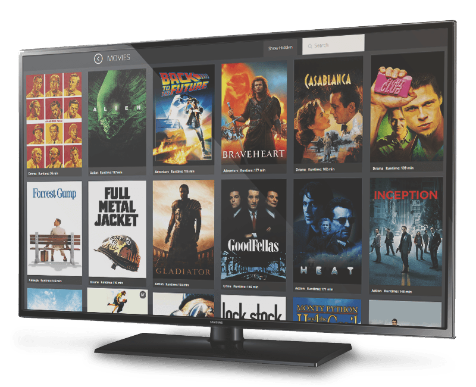

Easy to use, easy to customize
MediacenterJS is a fully functional media center application that runs in your browser. You can view your movies and listen to your music, all from the comfort of your favourite browser on your favourite device. No need to manually alter your files and super easy to customize with some HTML/CSS knowledge.
MediacenterJs is "app-less", which means it works on anything with a browser without having to install an App. It also has a handy browser based remote so you can use your phone as a remote for your TV. It's great to add functionality to your TV, tablet, PC or Chromebook.
